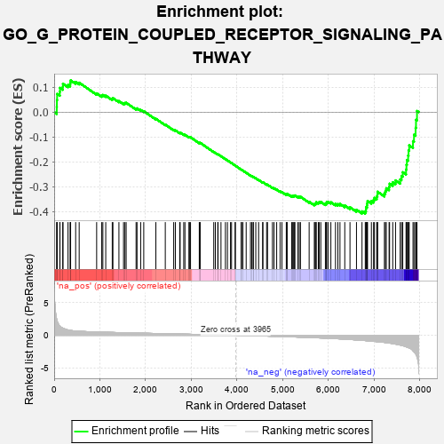
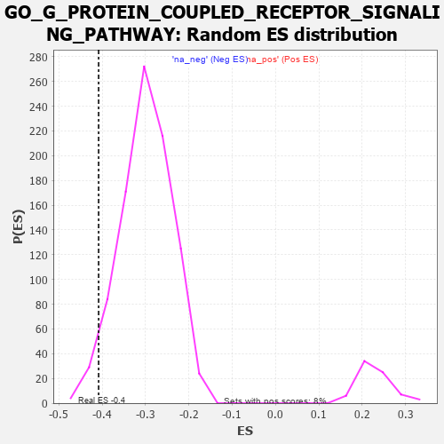

| | | Dataset | 7d |
| Phenotype | NoPhenotypeAvailable |
| Upregulated in class | na_neg |
| GeneSet | GO_G_PROTEIN_COUPLED_RECEPTOR_SIGNALING_PATHWAY |
| Enrichment Score (ES) | -0.4081958 |
| Normalized Enrichment Score (NES) | -1.3670632 |
| Nominal p-value | 0.036756758 |
| FDR q-value | 0.38440597 |
| FWER p-Value | 1.0 |
Table: GSEA Results Summary

Fig 1: Enrichment plot: GO_G_PROTEIN_COUPLED_RECEPTOR_SIGNALING_PATHWAY
Profile of the Running ES Score & Positions of GeneSet Members on the Rank Ordered List
| PROBE | GENE SYMBOL | GENE_TITLE | RANK IN GENE LIST | RANK METRIC SCORE | RUNNING ES | CORE ENRICHMENT | | 1 | MC4R | | | 57 | 2.491 | 0.0209 | No |
| 2 | RAC2 | | | 60 | 2.442 | 0.0483 | No |
| 3 | PTH2R | | | 65 | 2.249 | 0.0733 | No |
| 4 | ADCY8 | | | 124 | 1.418 | 0.0819 | No |
| 5 | ECEL1 | | | 127 | 1.412 | 0.0976 | No |
| 6 | RORB | | | 189 | 1.097 | 0.1023 | No |
| 7 | NMBR | | | 192 | 1.085 | 0.1143 | No |
| 8 | RGR | | | 303 | 0.814 | 0.1095 | No |
| 9 | GSK3A | | | 351 | 0.745 | 0.1119 | No |
| 10 | TAPT1 | | | 354 | 0.743 | 0.1201 | No |
| 11 | LGR6 | | | 360 | 0.738 | 0.1278 | No |
| 12 | LRP1 | | | 470 | 0.648 | 0.1212 | No |
| 13 | BRS3 | | | 547 | 0.614 | 0.1185 | No |
| 14 | PDE1B | | | 929 | 0.500 | 0.0755 | No |
| 15 | AKT1 | | | 1040 | 0.476 | 0.0668 | No |
| 16 | FZD10 | | | 1065 | 0.470 | 0.0691 | No |
| 17 | SRC | | | 1128 | 0.459 | 0.0664 | No |
| 18 | FNTB | | | 1270 | 0.436 | 0.0533 | No |
| 19 | GIT2 | | | 1285 | 0.432 | 0.0564 | No |
| 20 | P2RY1 | | | 1416 | 0.407 | 0.0445 | No |
| 21 | OGFR | | | 1517 | 0.388 | 0.0361 | No |
| 22 | SOS1 | | | 1547 | 0.384 | 0.0367 | No |
| 23 | FZD1 | | | 1574 | 0.379 | 0.0377 | No |
| 24 | GRM8 | | | 1791 | 0.339 | 0.0140 | No |
| 25 | ABR | | | 1812 | 0.335 | 0.0152 | No |
| 26 | GLRA2 | | | 1892 | 0.321 | 0.0088 | No |
| 27 | CCR4 | | | 1959 | 0.312 | 0.0039 | No |
| 28 | GRIK3 | | | 2224 | 0.272 | -0.0267 | No |
| 29 | MET | | | 2430 | 0.240 | -0.0502 | No |
| 30 | VAV3 | | | 2614 | 0.210 | -0.0711 | No |
| 31 | TAAR2 | | | 2650 | 0.206 | -0.0733 | No |
| 32 | TPRA1 | | | 2745 | 0.192 | -0.0831 | No |
| 33 | FNTA | | | 2755 | 0.190 | -0.0821 | No |
| 34 | RIC8A | | | 2833 | 0.179 | -0.0899 | No |
| 35 | PTH2 | | | 2860 | 0.173 | -0.0913 | No |
| 36 | NMT2 | | | 2947 | 0.158 | -0.1004 | No |
| 37 | BTK | | | 2958 | 0.156 | -0.1000 | No |
| 38 | ANO1 | | | 2982 | 0.152 | -0.1012 | No |
| 39 | OR5B2 | | | 3173 | 0.126 | -0.1240 | No |
| 40 | TM2D1 | | | 3186 | 0.124 | -0.1241 | No |
| 41 | TRIO | | | 3192 | 0.123 | -0.1234 | No |
| 42 | RGS8 | | | 3490 | 0.079 | -0.1604 | No |
| 43 | GRK6 | | | 3525 | 0.072 | -0.1639 | No |
| 44 | GPR18 | | | 3578 | 0.063 | -0.1698 | No |
| 45 | PARD3 | | | 3584 | 0.063 | -0.1697 | No |
| 46 | CCKAR | | | 3648 | 0.051 | -0.1772 | No |
| 47 | HTR1B | | | 3745 | 0.035 | -0.1890 | No |
| 48 | QRFPR | | | 3789 | 0.029 | -0.1942 | No |
| 49 | DGKQ | | | 3856 | 0.020 | -0.2024 | No |
| 50 | DGKZ | | | 3879 | 0.015 | -0.2050 | No |
| 51 | GLRA1 | | | 3957 | 0.001 | -0.2149 | No |
| 52 | SOS2 | | | 3963 | 0.000 | -0.2155 | No |
| 53 | PDE4B | | | 4089 | -0.022 | -0.2312 | No |
| 54 | PDE8A | | | 4097 | -0.023 | -0.2318 | No |
| 55 | PLCE1 | | | 4127 | -0.028 | -0.2352 | No |
| 56 | MCHR2 | | | 4199 | -0.041 | -0.2438 | No |
| 57 | RGS3 | | | 4293 | -0.059 | -0.2550 | No |
| 58 | TSHR | | | 4322 | -0.063 | -0.2579 | No |
| 59 | ADRB2 | | | 4352 | -0.068 | -0.2608 | No |
| 60 | PDE7A | | | 4355 | -0.069 | -0.2603 | No |
| 61 | RASD1 | | | 4409 | -0.078 | -0.2661 | No |
| 62 | GPR83 | | | 4471 | -0.088 | -0.2729 | No |
| 63 | RGS6 | | | 4559 | -0.107 | -0.2828 | No |
| 64 | RGS7 | | | 4565 | -0.108 | -0.2822 | No |
| 65 | NMUR2 | | | 4646 | -0.127 | -0.2910 | No |
| 66 | GPR19 | | | 4666 | -0.131 | -0.2919 | No |
| 67 | PDE1A | | | 4773 | -0.152 | -0.3037 | No |
| 68 | PLCL2 | | | 4807 | -0.159 | -0.3062 | No |
| 69 | NPY6R | | | 4866 | -0.170 | -0.3116 | No |
| 70 | FZD4 | | | 4940 | -0.186 | -0.3188 | No |
| 71 | ACKR4 | | | 4981 | -0.194 | -0.3217 | No |
| 72 | PDE4C | | | 5076 | -0.219 | -0.3313 | No |
| 73 | DRD2 | | | 5088 | -0.221 | -0.3302 | No |
| 74 | ITSN1 | | | 5094 | -0.222 | -0.3283 | No |
| 75 | SMO | | | 5195 | -0.247 | -0.3383 | No |
| 76 | GPR4 | | | 5219 | -0.250 | -0.3384 | No |
| 77 | GPSM2 | | | 5228 | -0.252 | -0.3365 | No |
| 78 | MGRN1 | | | 5250 | -0.257 | -0.3363 | No |
| 79 | PICK1 | | | 5265 | -0.263 | -0.3351 | No |
| 80 | NPY2R | | | 5331 | -0.281 | -0.3402 | No |
| 81 | ITPR3 | | | 5361 | -0.288 | -0.3407 | No |
| 82 | FZD5 | | | 5386 | -0.292 | -0.3404 | No |
| 83 | SPHK1 | | | 5576 | -0.339 | -0.3607 | No |
| 84 | MC5R | | | 5689 | -0.371 | -0.3708 | No |
| 85 | PRLHR | | | 5705 | -0.377 | -0.3684 | No |
| 86 | DGKI | | | 5725 | -0.384 | -0.3665 | No |
| 87 | CALCR | | | 5730 | -0.386 | -0.3626 | No |
| 88 | GLRB | | | 5776 | -0.398 | -0.3639 | No |
| 89 | ADA | | | 5798 | -0.405 | -0.3620 | No |
| 90 | RGS5 | | | 5831 | -0.414 | -0.3614 | No |
| 91 | CNGA1 | | | 5931 | -0.445 | -0.3690 | No |
| 92 | CXCR5 | | | 5954 | -0.456 | -0.3666 | No |
| 93 | ACTN2 | | | 5960 | -0.458 | -0.3621 | No |
| 94 | RGS20 | | | 5995 | -0.471 | -0.3611 | No |
| 95 | FZD8 | | | 6051 | -0.490 | -0.3625 | No |
| 96 | ROCK1 | | | 6152 | -0.520 | -0.3694 | No |
| 97 | INSR | | | 6204 | -0.538 | -0.3698 | No |
| 98 | XPR1 | | | 6250 | -0.555 | -0.3693 | No |
| 99 | GALR2 | | | 6355 | -0.599 | -0.3758 | No |
| 100 | GLRA3 | | | 6469 | -0.648 | -0.3829 | No |
| 101 | TUB | | | 6611 | -0.718 | -0.3927 | No |
| 102 | NPY1R | | | 6732 | -0.776 | -0.3993 | Yes |
| 103 | NET1 | | | 6803 | -0.816 | -0.3990 | Yes |
| 104 | GIPC1 | | | 6819 | -0.826 | -0.3915 | Yes |
| 105 | NMUR1 | | | 6821 | -0.828 | -0.3823 | Yes |
| 106 | MGLL | | | 6842 | -0.838 | -0.3753 | Yes |
| 107 | PTH1R | | | 6845 | -0.839 | -0.3661 | Yes |
| 108 | RGS17 | | | 6853 | -0.843 | -0.3574 | Yes |
| 109 | GHSR | | | 6937 | -0.894 | -0.3579 | Yes |
| 110 | PDE2A | | | 6985 | -0.927 | -0.3534 | Yes |
| 111 | CCR2 | | | 7003 | -0.939 | -0.3450 | Yes |
| 112 | GRM5 | | | 7053 | -0.969 | -0.3403 | Yes |
| 113 | PLCB4 | | | 7069 | -0.977 | -0.3311 | Yes |
| 114 | OPN4 | | | 7072 | -0.978 | -0.3203 | Yes |
| 115 | CNGB1 | | | 7222 | -1.096 | -0.3269 | Yes |
| 116 | ABCA1 | | | 7243 | -1.113 | -0.3169 | Yes |
| 117 | PLPP1 | | | 7262 | -1.135 | -0.3063 | Yes |
| 118 | TRPM1 | | | 7324 | -1.197 | -0.3005 | Yes |
| 119 | NGEF | | | 7335 | -1.209 | -0.2881 | Yes |
| 120 | GRM1 | | | 7404 | -1.272 | -0.2824 | Yes |
| 121 | NPY | | | 7465 | -1.356 | -0.2747 | Yes |
| 122 | CALM1 | | | 7567 | -1.499 | -0.2706 | Yes |
| 123 | GRM2 | | | 7596 | -1.547 | -0.2567 | Yes |
| 124 | TAAR1 | | | 7623 | -1.604 | -0.2418 | Yes |
| 125 | ADCY1 | | | 7695 | -1.752 | -0.2311 | Yes |
| 126 | ADCY9 | | | 7704 | -1.783 | -0.2119 | Yes |
| 127 | GNRHR | | | 7714 | -1.811 | -0.1926 | Yes |
| 128 | GRM3 | | | 7741 | -1.880 | -0.1746 | Yes |
| 129 | P2RY8 | | | 7750 | -1.912 | -0.1540 | Yes |
| 130 | PDE4D | | | 7764 | -1.944 | -0.1336 | Yes |
| 131 | GRM4 | | | 7847 | -2.393 | -0.1170 | Yes |
| 132 | CALM3 | | | 7869 | -2.525 | -0.0911 | Yes |
| 133 | PLCB1 | | | 7904 | -2.841 | -0.0633 | Yes |
| 134 | NPSR1 | | | 7913 | -2.947 | -0.0310 | Yes |
| 135 | ARRB1 | | | 7935 | -3.377 | 0.0046 | Yes |
Table: GSEA details [plain text format]

Fig 2: GO_G_PROTEIN_COUPLED_RECEPTOR_SIGNALING_PATHWAY: Random ES distribution
Gene set null distribution of ES for GO_G_PROTEIN_COUPLED_RECEPTOR_SIGNALING_PATHWAY